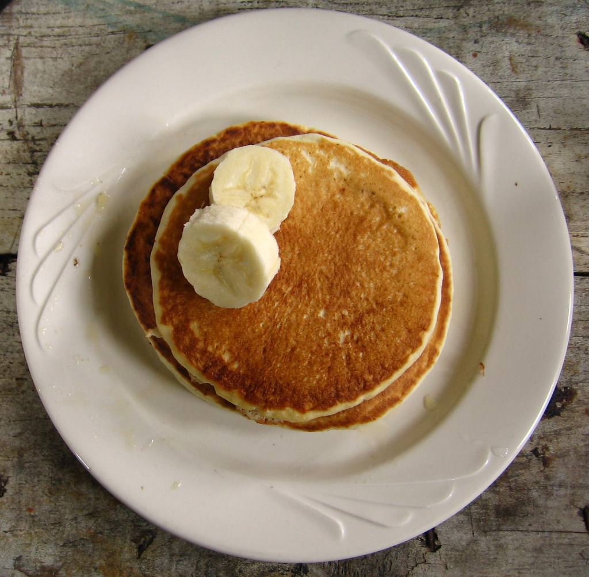

Pancake Recipe

"Pancake" by ewedistrict is licensed under CC BY-SA 2.0 

 .
.
Description:
A delicious breakfast pastry made in a pan.
Stack them up and slather in syrup for a belly-busting breakfast.
Ingredients:
- 1 ½ cups all-purpose flour
- 3 ½ teaspoons baking powder
- 1 tablespoon white sugar
- ¼ teaspoon salt, or more to taste
- 1 ¼ cups milk
- 3 tablespoons butter, melted
- 1 large egg
Steps:
- Preheat skillet or griddle over medium heat.
- Mix ingredients in a large bowl.
- Liberally grease your skillet.
- Ladle batter in a circle to desired pancake size on the hot skillet.
- When the batter circle bubbles and the edges are firm, flip the pancake.
- When fully cooked, remove the pancake from the skillet.
- Repeat, stack, and enjoy!
Home